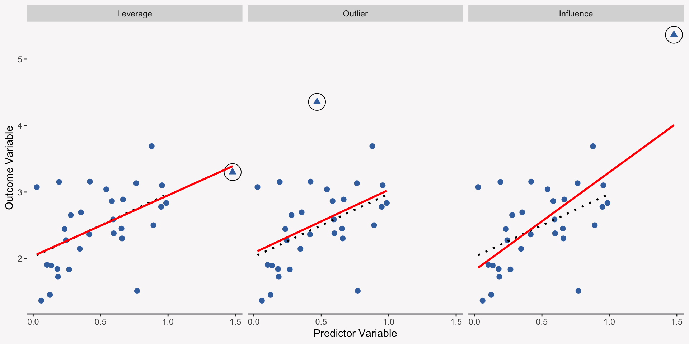
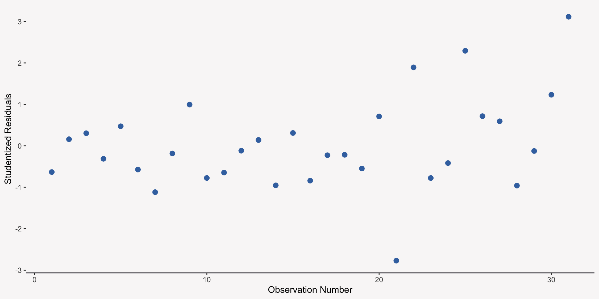
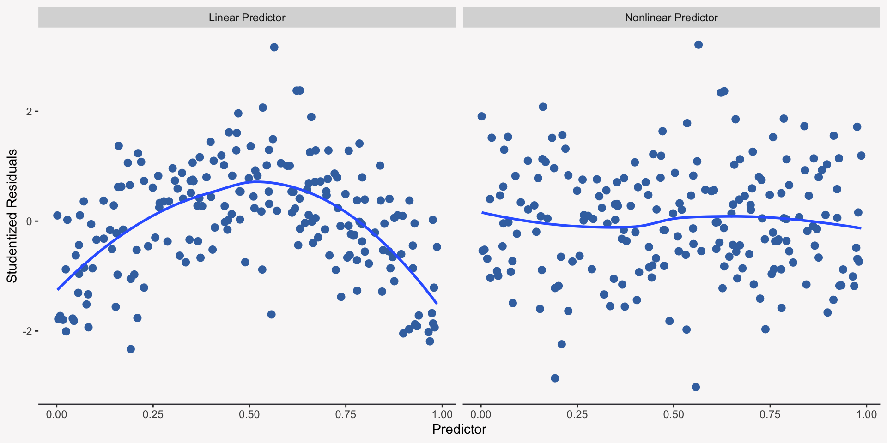
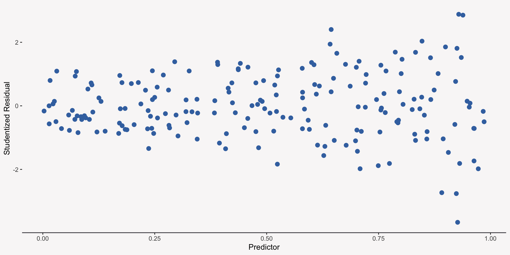
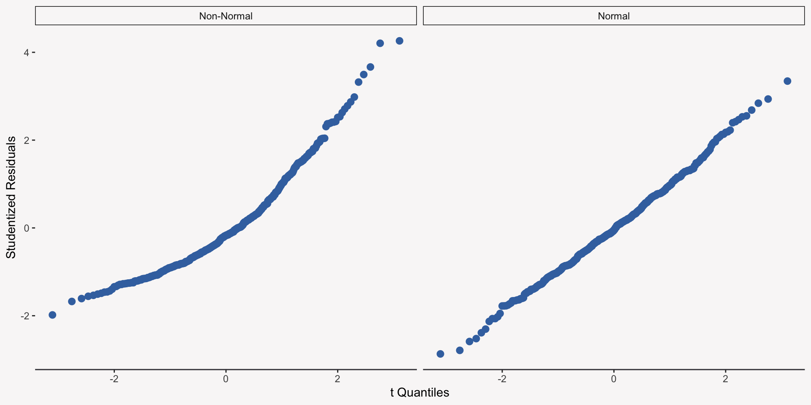
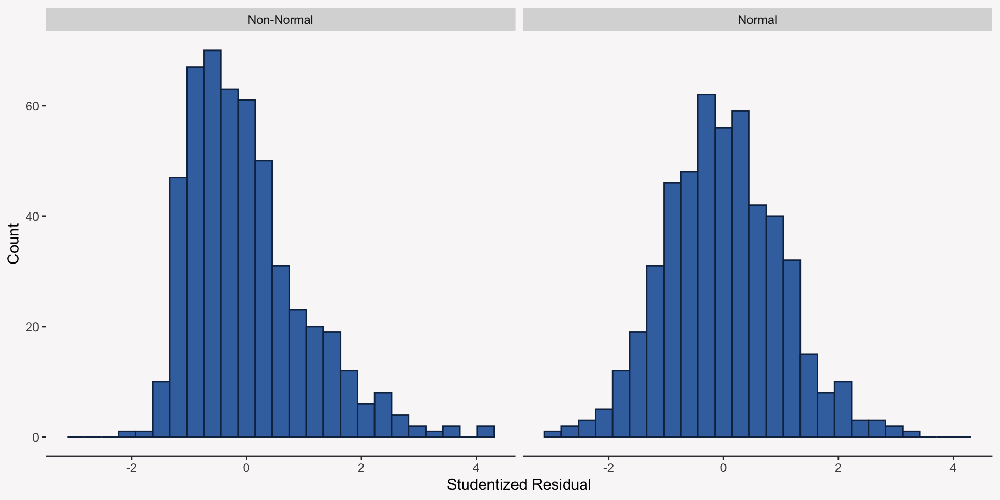

Learn how to detect and diagnose assumption violations
Learn how to detect and diagnose collinearity
Unusual & Influential Data
Unusual Observations
Unusual observations are cases where specific observations do not fit the general pattern of the overall data. It is important to detect these unusual observations as they can exert a lot of influence over the results of your analysis.
Leverage, Outliers, and Influence
Unusual observations can be “unusual” in several different ways:
Leverage: An observation where one or more of the predictor values is far away from the bulk of the predictor values.
Outliers: An observation with a large residual, which indicates the observed outcome value falls farther away from its predicted value.
Influence: The combination of high leverage with a regression outlier–these observations influence your results.
Visualizing Leverage, Outliers, and Influence

Measuring Leverage
The most common way to measure leverage is by the hat-values, \(h_i\). Hat-values range from \(\frac{1}{n}\) to 1 where larger values indicate that the predictor data for a given case (or respondent) is farther away from the average predictor values.
In a simple regression model, the hat-value tells us how far away a predictor value is from the average of all the predictor values.
Detecting Leverage
mod_influence <-lm( y ~ x, data = data |> dplyr::filter(type =="Influence"))hatvalues(mod_influence)
To identify outliers we need a good way to measure how unusual an outcome response is given values of its predictors. We can use the linear regression residuals, observed outcome minus the predicted outcome, but there are a two issues with regular residuals:
Residuals do not have equal variances
Residuals associated with high-leverage observations pull the regression line towards them which shrinks the residual
Different Types of Residuals
There are two types of residuals that adjust for the issues with regular residuals:
Standardized Residual: Regular residuals that have been standardized (variance = 1) and adjusted for their association with high-leverage observations so that residuals associated with high-leverage observations get increased.
Studentized Residual: Nearly identical to standardized residuals, but are standardized in a slightly different way to ensure that they follow a t-distribution. Studentized residuals are preferred over regular and standardized residuals.
Detecting Outliers
We can plot the studentized residuals against the observation number and look for comparatively extreme values (any values greater than 2 in absolute value).

Testing Outliers
We can use the function outlierTest from the package car to determine if the largest studentized residual is statistically different from the other studentized residuals:
car::outlierTest(mod_influence)
No Studentized residuals with Bonferroni p < 0.05
Largest |rstudent|:
rstudent unadjusted p-value Bonferroni p
31 3.113977 0.004229 0.1311
Measuring Influentional Observations
We can measure influence using local measures such as DFBETA or DFBETAS (standardized version) or global measures such as Cook’s Distance:
Local Measures: Tell us how a given observation changes the relationship between a predictor variable and outcome.
Global Measures: Tell us how a given observation influences all of the predicted values.
DFBETA & DFBETAS
Both DFBETA and DFBETAS compare how the regression coefficients change when a single observation is removed:
Cook’s Distance is a measure of how much the model predictions change when a given observation is removed. It is calculated by multiplying a measure of how unusual an outlier is by a measure of leverage:
While it is important to plot your residuals and holistically examine all of the various diagnostic statistics, there are a few cutoffs that can help you focus in on specific data points. These are rules of thumb, though!
Leverage: \(h_i > 2\times\bar{h_i}\)
Outlier: Studentized residuals greater than 2 or -2
DFBETAS: \(\text{DFBETAS}\gt \frac{2}{\sqrt{n}}\)
Cooks Distance: \(D_i \gt \frac{4}{n - k - 1}\)
What Do You Do with Unusual Observations?
Sometimes there is not much you can do about unusual observations, but it is always important to be aware of them. Some potential solutions are:
Discard the data if it is clearly wrong (e.g. coded incorrectly)
Try to understand if the unusual observation can lead to a better model
Use a model that is better at handling unusual observations such as robust regression
Violation of Linear Regression Assumptions
Review of Assumptions
We make the following assumptions when we fit a regression model:
Validity of our Data
Representativeness of our Data
Additivity & Linearity
Independence of Errors
Equal Variance of Errors (Homoscedasticity)
Normality of Errors
Assumption Violations
Assumptions violations occur whenever our data (specifically our residuals) do not follow at least one of the previous assumptions. When a violation occurs, it usually biases the standard error estimates for the regression coefficients, which hurts our ability to make accurate statistical inferences.
Detecting Nonlinearity
To detect nonlinearity we can plot the predictor values against the studentized residuals. If we have more than one predictor, we can plot the predicted outcome values against the studentized residuals. If our assumptions of linearity are met, then the plot should just look like a cloud of points randomly scattered.
Visualizing Nonlinearity

Testing Nonlinearity
Although plots are great, if you have reason to believe their is a nonlinear effect in your data, then the best way to test this is to include a squared term (\(X^2\)) in your model. If the squared term is significant, then you can conclude there is a nonlinear effect.
Detecting Non-Constant Error Variance
To detect non-constant error variance (heteroscedasticity), we can plot the studentized residuals of our model against each specific predictor or the overall predicted value from the model.

Testing for Non-Constant Error Variance
We can also use a special statistical test that will help us further understand if the patterns we see in our data are actually indicative of non-constant error variance. If the p-value is below some preset cutoff, usually .05, then we can conclude that we have violated the assumption of constant error variance. We can use the function ncvTest from the car package.
car::ncvTest(mod_ncv)
Non-constant Variance Score Test
Variance formula: ~ fitted.values
Chisquare = 35.77186, Df = 1, p = 2.2183e-09
Detecting Non-Normality
Violations of normality typically have little effect on your inferences unless they are extreme (e.g. your data has very heavy tails or suffers from an extreme positive or negative skew).
We can use a QQ plot (quantile quantile plot) to visually examine if the studentized residuals fall nicely along a straight line when plotted against quantiles from a t-distribution. The further these residuals fall away from the line, the more likely it is that our normality assumption has been violated.
QQ Plot for Normality

Additional Normality Plot
We can also plot the distribution of the studentized residuals to determine if the normality assumption was violated:

Testing for Normality
We can use a statistical test to provide further information as to whether our data violate the normality assumption:
Asymptotic one-sample Kolmogorov-Smirnov test
data: rstudent(mod_norm)
D = 0.02625, p-value = 0.881
alternative hypothesis: two-sided
Asymptotic one-sample Kolmogorov-Smirnov test
data: rstudent(mod_log)
D = 0.096936, p-value = 0.000166
alternative hypothesis: two-sided
Correcting for Violations
There are several different ways to correct for negative impact that assumption violations have on the regression coefficient standard errors:
Make adjustments to the regression coefficient standard errors using sandwich estimators
Using bootstrap standard errors
Use a more appropriate statistical model such as a Weighted Least Squares model
Collinearity
What is Collinearity?
Collinearity is a measure of how related your predictors are with one another. While some level of relationship among your predictors is to be expected, if the level increases, then it can bias the estimation of the regression coefficient standard errors.
Measuring & Detecting Collinearity
We use the Variance Inflation Factor or VIF to measure and detect collinearity, which obtains the \(R^2\) for each predictor when it is regressed on all of the other predictors. The larger the \(R^2\), the worse the collinearity.
\[VIF = \frac{1}{1 - R^2_j}\]
An Example of Collinearity
mod_1 <-lm(y ~ x1 + x2 + x3)car::vif(mod_1)
x1 x2 x3
14.058197 1.000398 14.056814
summary(mod_1)
Call:
lm(formula = y ~ x1 + x2 + x3)
Residuals:
Min 1Q Median 3Q Max
-3.6247 -0.5655 -0.0106 0.6341 2.2083
Coefficients:
Estimate Std. Error t value Pr(>|t|)
(Intercept) -0.02770 0.03896 -0.711 0.4774
x1 0.28115 0.14378 1.955 0.0511 .
x2 0.35946 0.03783 9.503 <2e-16 ***
x3 0.24651 0.14739 1.673 0.0950 .
---
Signif. codes: 0 '***' 0.001 '**' 0.01 '*' 0.05 '.' 0.1 ' ' 1
Residual standard error: 0.8642 on 496 degrees of freedom
Multiple R-squared: 0.3506, Adjusted R-squared: 0.3467
F-statistic: 89.26 on 3 and 496 DF, p-value: < 2.2e-16
An Example of Collinearity
Which model do you choose?
mod_2 <-lm(y ~ x1 + x2)summary(mod_2)
Call:
lm(formula = y ~ x1 + x2)
Residuals:
Min 1Q Median 3Q Max
-3.6337 -0.5803 -0.0144 0.6104 2.2599
Coefficients:
Estimate Std. Error t value Pr(>|t|)
(Intercept) -0.03561 0.03874 -0.919 0.358
x1 0.51291 0.03842 13.349 <2e-16 ***
x2 0.36002 0.03789 9.501 <2e-16 ***
---
Signif. codes: 0 '***' 0.001 '**' 0.01 '*' 0.05 '.' 0.1 ' ' 1
Residual standard error: 0.8658 on 497 degrees of freedom
Multiple R-squared: 0.3469, Adjusted R-squared: 0.3443
F-statistic: 132 on 2 and 497 DF, p-value: < 2.2e-16
An Example of Collinearity
Which model do you choose?
mod_3 <-lm(y ~ x3 + x2)summary(mod_3)
Call:
lm(formula = y ~ x3 + x2)
Residuals:
Min 1Q Median 3Q Max
-3.6038 -0.5789 -0.0231 0.6112 2.2814
Coefficients:
Estimate Std. Error t value Pr(>|t|)
(Intercept) -0.01944 0.03884 -0.501 0.617
x3 0.52428 0.03943 13.297 <2e-16 ***
x2 0.35848 0.03793 9.451 <2e-16 ***
---
Signif. codes: 0 '***' 0.001 '**' 0.01 '*' 0.05 '.' 0.1 ' ' 1
Residual standard error: 0.8667 on 497 degrees of freedom
Multiple R-squared: 0.3456, Adjusted R-squared: 0.343
F-statistic: 131.2 on 2 and 497 DF, p-value: < 2.2e-16
Dealing with Collinearity
Unless VIF is high, greater than 5 (or even 10), then we should not worry about it too much. But there are a few solutions:
Combine the collinear predictors together (average them or more advanced methods)
Drop one of the collinear predictors
Change to a more appropriate model that corrects for this such as ridge regression